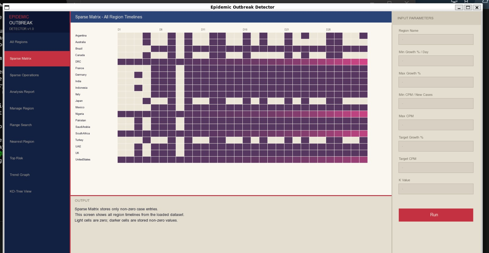
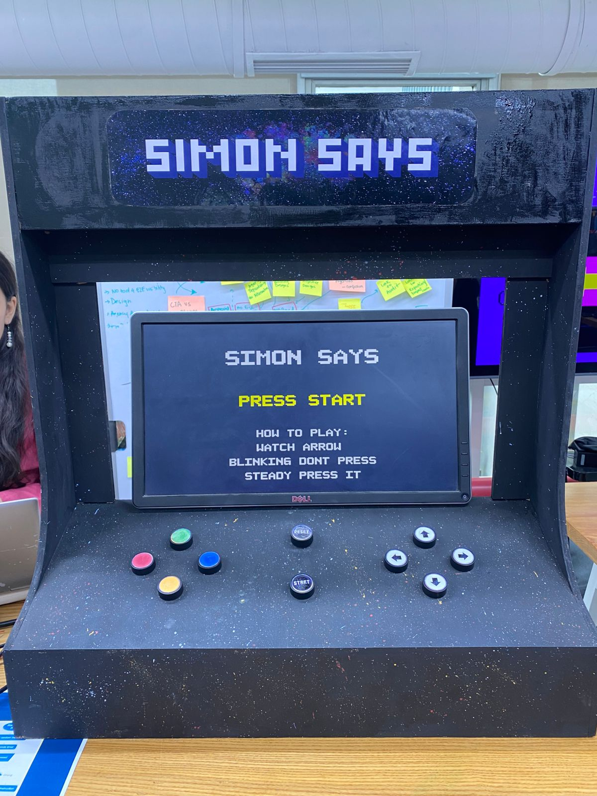
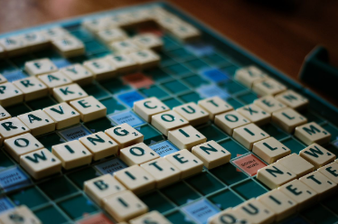

My Projects
Here is a list of academic projects I have worked on.

Epidemic Outbreak Detection System
A C++ tool that flags disease outbreak risk (Safe/Warning/Outbreak) using a decision tree and sparse matrix, with a KD-tree comparing regional data and a max-heap ranking risk levels. Visualized using SFML.

Digital Simon Says — FPGA Game
An FSM-based version of Simon Says built in Verilog on a Basys-3 FPGA, with VGA display output, a timer, directional input handling and scoring.

Scrabble — Digital Board Game
A 2-player Scrabble game in C++/SFML with a full GUI, dictionary word validation, premium tile scoring and a shared tile bag.
Lost and Found Management System
A role-based (admin/user) desktop app built with Python (PyQt6) and SQL Server, letting users register lost items, track status and search with filters.